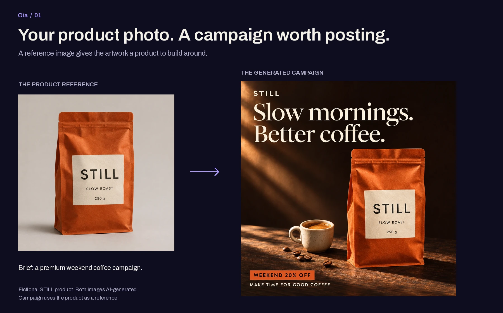
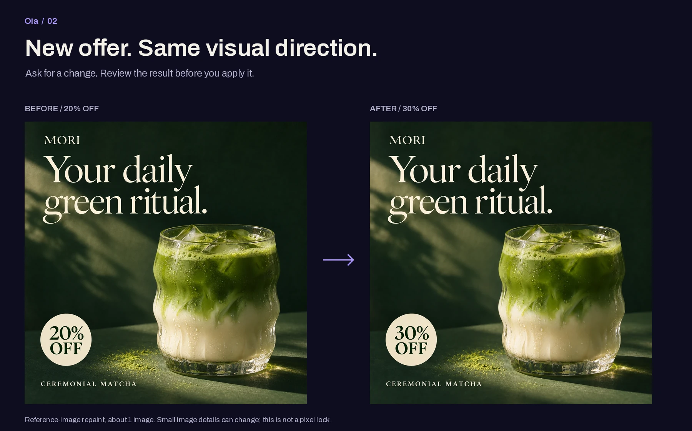
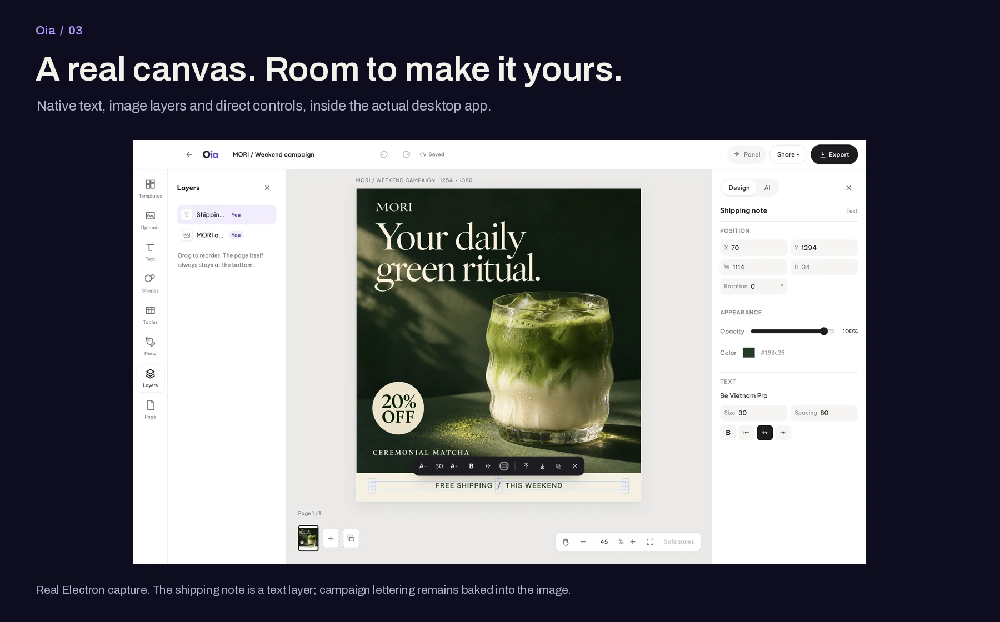
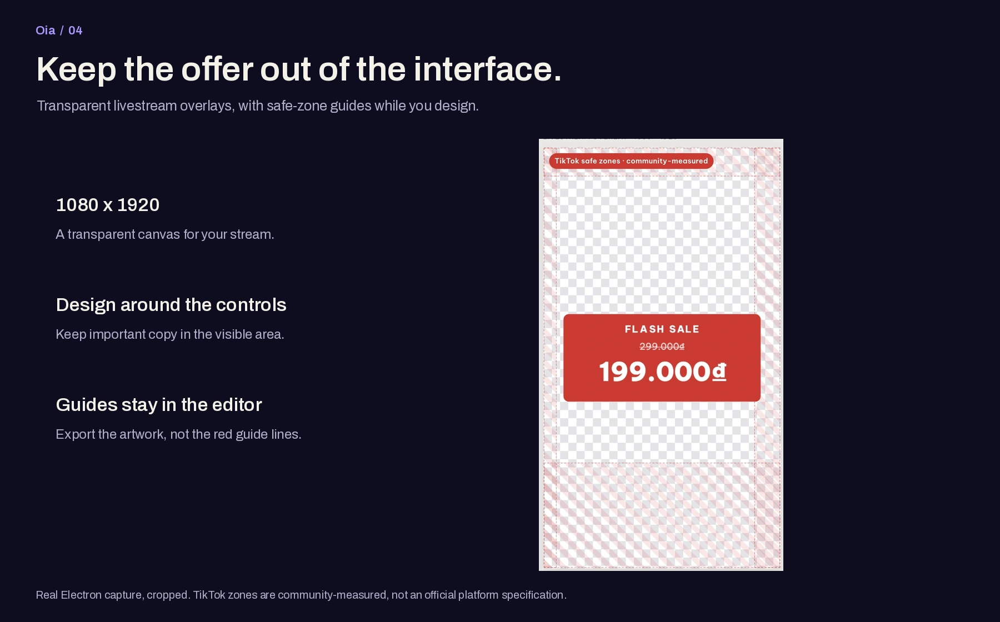
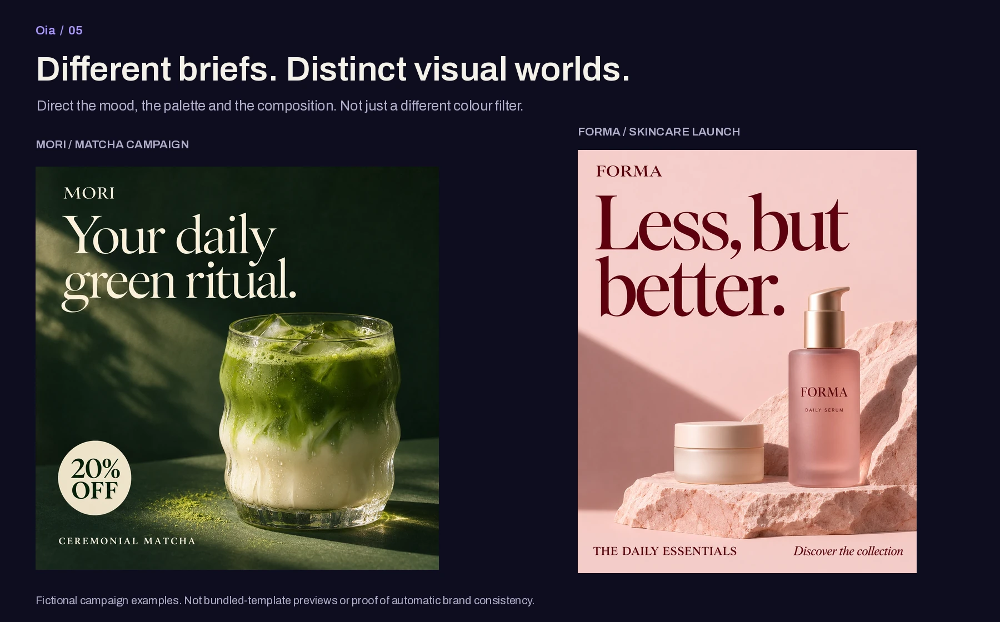

01 / Product reference to finished campaign
The strongest new addition: an understandable before-and-after, not an unrelated generated poster.
Product source · Campaign source

The original product photo is also AI-generated. The campaign was generated with that image attached as a reference. This illustrates the image channel, not the complete app workflow.

02 / New offer, same visual direction
Keep this close to the top. It answers the seller's next question: what happens when tomorrow's promotion changes?
Reuses the reviewed reference-edit pair. Repaint consumes image quota and may change fine image details. It is not a free native text edit.

03 / A real editor, not a generated interface
Shows the product behind the artwork. Use the unframed source screenshot for the final responsive landing.
Full original editor capture
Only the shipping note is a native text layer here. Make text editable exists and costs about 1 image + 1 read, but this screenshot is not evidence of deconstructing the campaign lettering.

04 / A practical livestream feature
A specific seller use case. The red zones explain the feature more clearly than a decorative phone mockup.
Original app gate capture
Crop of an existing Electron gate screenshot, not a fresh platform test. TikTok values are community-measured, Shopee values are estimates. The guide is not exported with the artwork.

05 / More than one visual style
An editorial pause between product demonstrations. Reuses strong artwork instead of spending quota on another generic sample.
These are campaign examples, not bundled templates, automatic brand-kit outputs, or evidence of one-click adaptation across sizes.